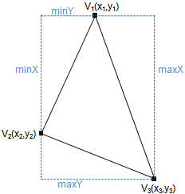
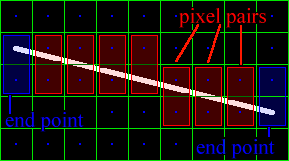
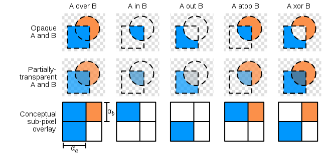

Hello.
Welcome to
JSCube
Draw 3D objects pixel by pixel on
2D HTML5 canvas
Brought to you by
| Linus Yang |
Features
- Web application for modern browsers
- 3D engine on HTML5 2D canvas
- Pixel-based rendering with anti-aliasing
- No WebGL
- Support mouse and keyboard
- Support multi-touch screen
- Ready for Retina display
Demo
linusyang.com/jscube
Implementation
CoffeeScript
- A little language that compiles into JavaScript
- Brevity and readability
- Inspired by Ruby, Python and Haskell
- Support Object-Oriented Programming
HTML5 Canvas
- Supported by most modern browsers, even mobile
- Self-managed buffer created by createImageData
- putImageData API is used for pixel drawing*
- * HTML5 Path for mobile devices with limited resources
Algorithms
- 3D Projection to 2D
- Triangle Rasterization
- Edge Anti-aliasing
- Alpha Compositing
3D Projection
Perspective projection
camerautil.coffee
setCamera: (grapher, state, draw_now = true) ->
renderer = grapher.renderer
renderer.camera.focal_length = state.focal_length
ct = renderer.camera.transform
ct.reset()
ct.rotateZ state.rotate_z
ct.rotateY state.rotate_y
ct.rotateX state.rotate_x
ct.translate state.x, state.y, state.z
grapher.draw() if draw_now
return
3D Projection
Pinhole camera model
renderer.coffee
# Pinhole camera model
projectPointToCanvas: (p) ->
v = @camera.focal_length / -p.z;
scale = @scale_
x: p.x * v * scale + @xoff_,
y: p.y * v * -scale + scale
3D Projection
Occlusion culling and surface lighting
renderer.coffee
for qf, j in shape.quads
# ...
continue if draw_backfaces != true and
VectorUtil.dotProduct3d(centroid, n1) > 0 and
VectorUtil.dotProduct3d(centroid, n2) > 0
intensity = VectorUtil.dotProduct3d({x: 0, y: 0, z: 1}, n1)
# ...
Triangle Rasterization
Barycentric Algorithm
Barycentric Algorithm
- Determine the bordering box
- Scan horizonally
- Set pixels in the triangle
- Optimize on the edge
Edge Anti-aliasing
Xiaolin Wu's Line Algorithm
Xiaolin Wu's Line Algorithm
- Similar with Bresenham's algorithm
- Fast for anti-aliasing
- Draw pairs of pixels straddling the line
- Draw end points separately
Alpha Compositing
Alpha Compositing
context.coffee
na = a1 + a0 * (1 - a1)
R0 = (R1 * a1 + (1 - a1) * R0 * a0) / na
G0 = (G1 * a1 + (1 - a1) * G0 * a0) / na
B0 = (B1 * a1 + (1 - a1) * B0 * a0) / na
a1 = na
References
Pre3d. https://github.com/deanm/pre3d
Software Rasterization Algorithms for Filling Triangles. http://www.sunshine2k.de/coding/java/TriangleRasterization/TriangleRasterization.html
Advanced Rasterization. http://devmaster.net/posts/6145/advanced-rasterization
Wu Anti-aliased Lines. http://freespace.virgin.net/hugo.elias/graphics/x_wuline.htm
Xiaolin Wu's line algorithm. http://en.wikipedia.org/wiki/Xiaolin_Wu%27s_line_algorithm
Alpha compositing. http://en.wikipedia.org/wiki/Alpha_compositing
Open-source on Github
github.com/linusyang/jscube
- Slides at linusyang.com/jscube/ppt
- Also open-sourced on Github